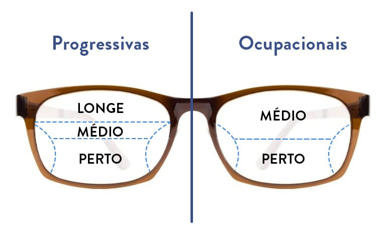
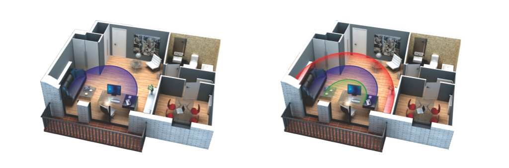

Nossas Lentes
Tecnologia a serviço da visão
Tecnologia a serviço da visão
As lentes ocupacionais possuem somente dois campos de visão numa lente: visão para perto e visão intermediária.
Diferentemente de uma lente multifocal (progressiva), que é possível reunir múltiplos pontos focais numa lente para que você possa enxergar para distâncias de perto, intermediário e longe.
As lentes ocupacionais costumam ser recomendadas para aqueles que possuem presbiopia e trabalham constantemente em frente ao computador ou realizando leituras.
Exemplo:
• Dentistas.
• Secretárias.
• Programadores.
• Advogados.
• Escrivão.
Inúmeras atividades entre 1.2 , 2 ou até
4 metros.
Isso porque o objetivo dessa lente é otimizar o campo de visão dessas pessoas.
Ou seja, as lentes ocupacionais possibilitam uma visão mais confortável, sem provocar desconfortos na transição do grau para essas tarefas.
Mas, atenção! Elas se diferem das lentes multifocais (progressivas) que, normalmente, possuem os três campos de visão: perto, intermediário e campo de longe.
A gente separou uma imagem pra esclarecer a diferença entre lentes ocupacionais e as multifocais, confira abaixo. Veja só:
E o uso das lentes ocupacionais pode ajudar muito nos casos de presbiopia ou vista cansada.
Isso porque vai proporcionar maior conforto para momentos de leitura ou durante o uso do computador, por tempo prolongado.
Os benefícios das lentes ocupacionais são inúmeros:
• Corrigem a visão para perto
• Ampliam a visão intermediária
• Não há necessidade de colocar os óculos na ponta do nariz para enxergar
Algumas atividades que realizamos diariamente pedem por uma lente específica.
Por exemplo, se você tem contato constante com o computador, realiza leituras, trabalhos manuais, entre outros, as lentes ocupacionais são mais recomendadas.
Porém, nem sempre o uso apenas dessas lentes consegue atender suas necessidades diárias.
Vamos supor que você realize atividades ao ar livre, ao usar as lentes ocupacionais seu campo de visão fica limitado.
Por esse motivo que, dependendo das atividades diárias, as lentes multifocais podem ser uma melhor opção.
Isso não significa dizer que as lentes ocupacionais não ajudam ou protegem sua visão, apenas considera o fato de que uma lente multifocal pode atender melhor suas necessidades.
Ótica Florença - CNPJ: 23.398.421/0001-18
Resp. Técnico - Mariano Guglielmi